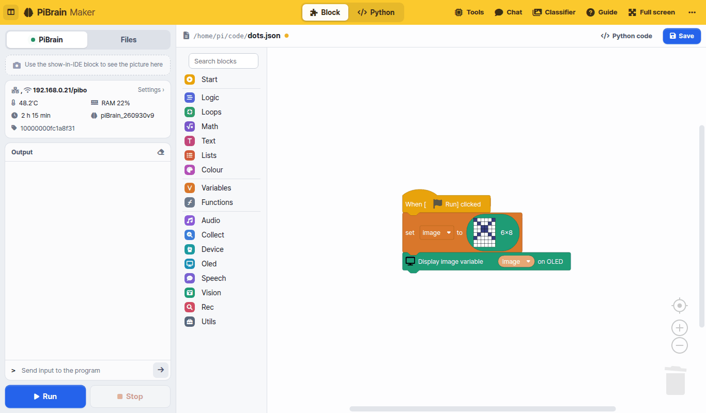
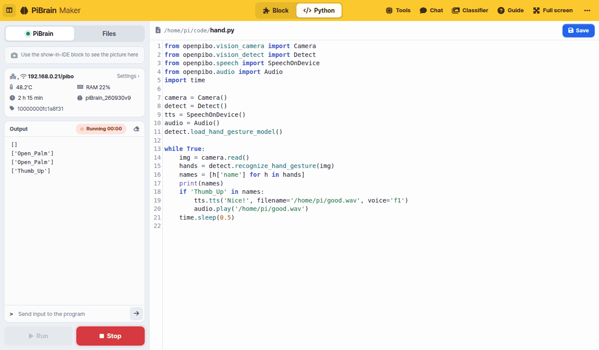
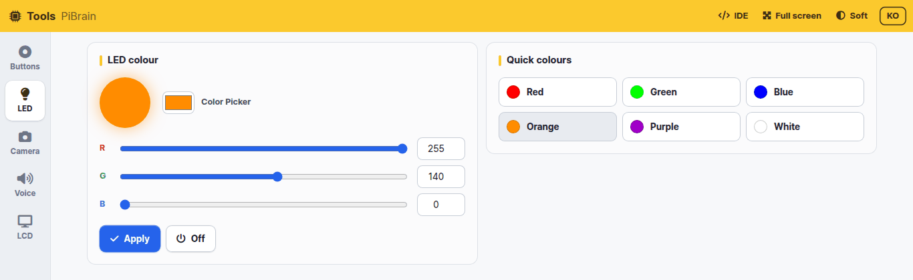
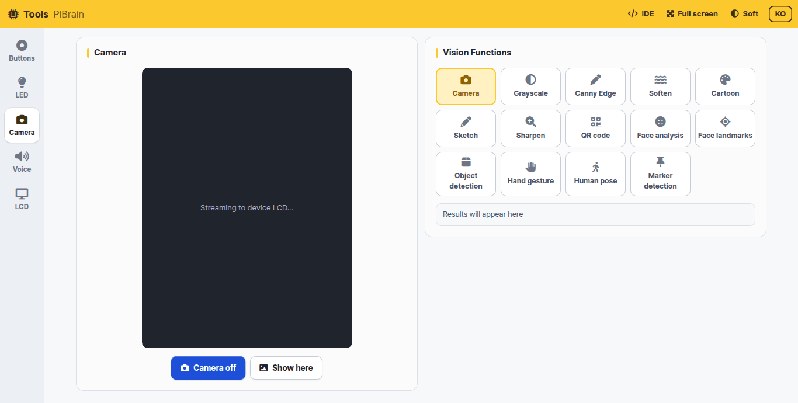
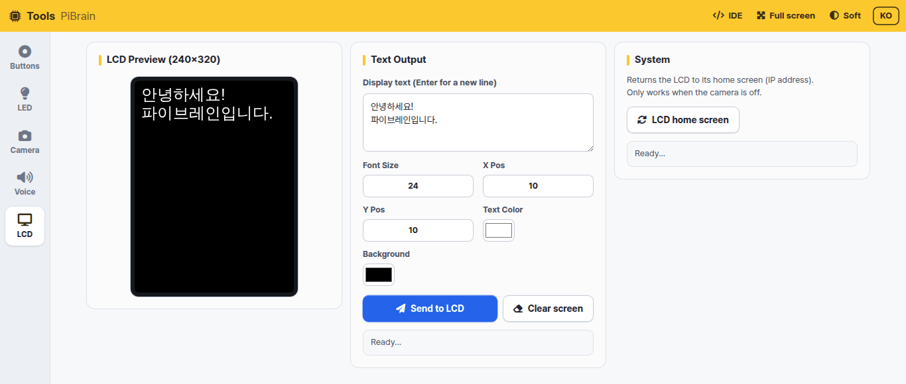
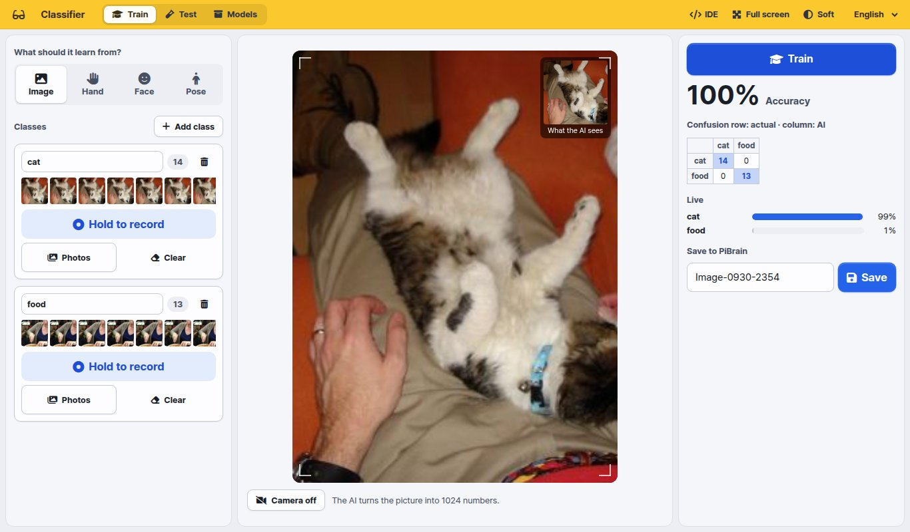

PiBrain Maker¶
PiBrain Maker is the PiBrain development environment you open in a web browser. When your tablet or laptop is on the same WiFi as PiBrain, type PiBrain’s IP address (shown on the first LCD screen) into the address bar. There is nothing to install.
Screen |
What it does |
Where to open it |
|---|---|---|
IDE |
Build and run programs with blocks or Python |
|
Tools |
Try the buttons, LED, camera, voice and LCD right away, without code |
[Tools] at the top of the IDE |
Chat |
Chat in text with the language model (LLM) running inside PiBrain |
[Chat] at the top of the IDE |
Classifier |
Collect examples with the camera and teach your own AI |
[Classifier] at the top of the IDE |
Guide |
This document |
[Guide] at the top of the IDE |
Note
Everything runs inside PiBrain (voices, chat and the classifier included). Only the blocks in the [Collect] category (Wikipedia, weather, news) need the internet, and that category is only in the Korean edition.
IDE¶

Top bar: switch the editor with [Block | Python]. On the right are Tools, Chat, Classifier, Guide, Full screen and [⋯] More (brightness · font size · Python editor theme · language · reset · power · source code and license)
Left panel: [Run] [Stop] at the bottom are always visible.
[PiBrain] — screen output (pictures sent with the
Display image variable … on IDEblock), status (WiFi, temperature, memory, uptime, version), program output, sending input to the program[Files] — the file list, new file / new folder / upload, and a preview for pictures and sounds
Blocks: drag blocks out of the categories on the left. Type a word such as “sound” or “face” into Search blocks at the top to find blocks. [Python code] shows the Python code your blocks make. See Blocks on the left for every block.

Python: the
openpibopackage gives you every PiBrain feature.printgoes to [Output] on the left andinputreads from the input box. See Python on the left for the APIPrograms run inside PiBrain. Press [Stop] to stop one
Tools¶
Try PiBrain’s features one at a time, without code. Pick [Buttons], [LED], [Camera], [Voice] or [LCD] on the left.
Buttons: shows live whether each of the 4 buttons is pressed

LED: pick a colour and press [Apply] to light the LED in that colour

Camera: press [Camera on] to show the camera view on the PiBrain LCD. Tap a vision feature (grayscale, edges, cartoon, QR code, face analysis, object detection, hand gestures, pose, markers…) to apply it to the LCD view right away; the result appears as text at the bottom right. [Show here] shows the current view in the browser too
Voice: pick one of ten voices (Male 1–5, Female 1–5) and let PiBrain say your text. Korean and English are detected automatically

LCD: choose the text, size, position and colour and show it on the LCD (240×320). [LCD home screen] goes back to the first screen with the IP address
Classifier¶

Collect examples with the camera and teach the AI, for example “this is a cat, this is food”. The PiBrain camera is portrait (3:4), so the view is portrait too.
What should it learn from? — Image (the whole picture) · Hand (hand shape) · Face (expression) · Pose (body posture)
Name each class and keep pressing [Hold to record] to collect examples. You can also upload files with [Photos]
[Train] — the tablet or laptop browser learns in a few seconds and shows the accuracy, a confusion table and live scores
[Save] (under Save to PiBrain) — saved on PiBrain in
/home/pi/mymodel/<model name>In the IDE use
Load classifier model (mymodel) (model name)→Classify (image) with classifier model.Draw what the classifier saw on imagedraws the hand, face or body points and the class name on the picture
The [Test] tab tries a saved model again. [Models] lets you test, keep training, rename, download (zip) or delete a model.
Tip
The classifier downloads its AI files (about 10 MB) the first time it opens. Open it once on every tablet before class and it will start right away during class.
Chat¶
Chat in text with the language model (LLM) that runs inside PiBrain. Programs can use it too, with the Start LLM server and
Respond to … blocks in [Speech]. Loading the model takes a while, so the first time you open it a waiting screen appears until it is ready.
Note
Tools, Chat and Classifier run one at a time. Opening one closes the others, and running a program in the IDE closes them too (they share the camera, speaker and memory). A closed screen shows [Restart].